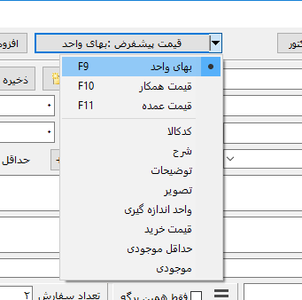

پنجره انبار¶
در این پنجره اعمال متعددی بر روی انبار قابل انجام می باشد، علاوه بر گزینه هایی که در پنجره قابل مشاهده است گزینه های دیگری در منوی پنجره که توسط کلیک بر روی تصویر سه خطی گوشه سمت چپ و بالا وجود دارد قابل دسترس می باشد . کارهایی که با این پنجره قابل انجام می باشند به شرح زیراند:
انتخاب انبار¶
توسط گزینه اول و سمت راست پنجره امکان نمایش انبار های مختلف وجود دارد، با انتخاب هر انبار تنها محتوای داخل آن انبار نمایش داده خواهد شد و جستجو نیز در میان همان انبار انجام میشود، برای نمایش کل انبارها و جستجو بین همه آنها کافیست این گزینه را روی <همه> تنظیم نمایید، برای مدیریت بیشتر انبار به قسمت منوی پنجره مراجعه نمایید.
کالا و خدمات¶
افزودن کالا یا خدمات جدید : برای این کار ابتدا جدید را انتخاب نمایید ، نشانه گر بر روی فیلد "کد" خواهد رفت ، اطلاعات مورد نظر را وارد کنید و با ماوس یا با زدن کلید تب ( Tab ) به فیلد بعدی بروید ، در پایان با انتخاب ذخیره کالای وارد شده به انبار اضافه می شود .
توجه داشته باشید که میبایست حداقل های "کد غیر تکراری، قیمت، تعداد و شرح1" وارد شوند تا گزینه ذخیره فعال گردد.
محاسبه خودکار قیمت فروش : برای وارد کردن قیمت فروش می توانید از امکان محاسبه خودکار آن استفاده کنید، به اینصورت که بعد از نوشتن قیمت خرید و زدن کلید "تب" به فیلد بعدی منتقل می شوید که در کنار آن % وجود دارد، در این فیلد با نوشتن درصد افزایش قیمت یا سود و زدن کلید "اینتر" ( Enter ) یا کلیک بر روی فلش کنار آن درصد نوشته شده به قیمت خرید افزوده می شود و در کادر قیمت فروش نوشته خواهد شد.
∞: توسط این گزینه میتوانید مشخص کنید که کالا/خدمات انتخاب شده دارای مقدار نامحدود است و با فروش آن مقدارش کم نمیشود، برای مثال کارهای خدماتی ممکن است از همین نوع باشند.
ویرایش کالا یا خدمات : برای این کار کافیست کالای مورد نظر را انتخاب نموده ، فیلد های مورد نظر را که در بالای لیست میباشد ویرایش کرده و ذخیره را انتخاب نمایید .
حذف کالا خدمات : ابتدا کالا یا خدمات مورد نظر را انتخاب کرده، سپس "حذف" را انتخاب نمایید . برای انتخاب چند مورد بصورت همزمان کافیست از کلید Shift یا Ctrl به همراه کلیک کردن استفاده نمایید، همچنین گزینه هایی در منوی راست کلیک لیست برای انواع دیگر انتخاب قرار داده شده اند.
با کلیک بر روی تصویر کالا، تصویری بزرگتر نمایش داده خواهد شد.
انتخاب¶
انتخاب کالا یا خدمات : علاوه بر انتخاب کالا یا خدمات از این پنجره میتوانید این کار را بصورت سریع در پنجره اصلی و در جدول با امکان انبار سریع داشته باشید، در انبار داشتن تعداد سفارش بیش از صفر به منزله انتخاب برای افزودن به برگه می باشد . این امر به چهار صورت امکان پذیر است :
کافیست برای افزایش مقدار سفارش بعد از انتخاب مورد دلخواه روی آن مجدد کلیک نمایید تا تعداد سفارش آن افزایش یابد . با نگه داشتن کلید
Altو کلیک بر روی مورد میتوانید تعداد سفارش آن را کم کنید .کالا یا خدمات مورد نظر را انتخاب نموده و با استفاده از "تعداد" تعداد سفارش مورد نظر را تعیین کنید .
کالا یا خدمات مورد نظر را انتخاب نموده و در کادر "تعداد سفارش" تعداد مورد نظر را وارد کرده و کلید "اینتر"(
Enter) را بفشارید .بعد از جستجو بدون ترک کادر جستجو می توانید با هر بار زدن کلید "اینتر" (
Enter) یکی به تعداد سفارش گزینه انتخاب شده بیفزایید.
توجه
توصیه می شود بصورت کامل تمام موارد درخواستی برای افزودن به فاکتور را در یکبار اجرای پنجره انبار انتخاب نمایید.
توجه
در صورت انتخاب گزینه "افزودن و اعمال به انبار" تعداد موارد انتخابی از انبار کاسته خواهد شد .
توجه
شما نمی توانید تعداد سفارشی بیش از موجودی آن کالا یا خدمات داشته باشید.
افزودن به برگه : پس از انتخاب کالا (ها) ی مورد نظر می توانید آن را به برگه اضافه کنید . این کار به سه روش مجزا امکان پذیر است :
افزودن و اعمال به انبار : با این گزینه تعداد کالا یا خدمات انتخابی از لیست موجودی انبار کاسته می شود و به برگه اضافه می گردد .
افزودن : این گزینه شبیه به مورد قبلیست با این تفاوت که تغییری در موجودی انبار اعمال نمیشود . کاربرد این گزینه میتواند برای مثال صدور پیش فاکتور باشد .
افزودن بدون قیمت : این گزینه شبیه به مورد قبلیست با این تفاوت که قیمت کالا یا خدمات نیز به برگه اضافه نمی شود.
جستجو¶
جستجو در بین کالا یا خدمات : کافیست قسمتی یا کل نام و یا کد کالا/خدمات مورد نظر را در کادر "جستجو" تایپ نمایید . وقتی موردی را جستجو می نمایید تب "جستجو" فعال می شود ، بدیهی است برای بازگشت به لیست کل کالا یا خدمات باید تب "انتخاب کالا" و یا "کالاهای انتخاب شده" را برگزینید .
فقط همین برگه : در موقع ذخیره موردی در انبار، هر مورد با مشخصات برگه کنونی ذخیره می شود و با فعال کردن این گزینه نرم افزار فقط مواردی را نمایش می دهد و یا جستجو میکند که در موقع انتخاب برگه کنونی وارد شده اند.
این حالت در مواردی که برگه های مورد استفاده برای مشاغل مختلف یا نوع موارد متفاوت هستند بسیار پر کاربرد خواهد بود.
بدیهی است که با غیر فعال کردن این گزینه همه اطلاعات موجود در انبار نمایش داده خواهد شد.
با کلیک بر روی گزینه مقابل کادر جستجو منویی برای فیلتر کردن و نوع جستجو باز خواهد شد که توضیح هر مدام به شرح زیر است:
فقط مواردی که با متن جستجو شروع می شوند : در صورت فعال بودن این گزینه مورد یافت شده میبایست از ابتدای متن با متن جستجو مطابقت داشته باشند، در صورت غیر فعال بودن متن جستجو شده در هر کجای متن یافت شده می تواند باشد.
دیگر موارد موجود در این منو لیست فیلد های موجود در برگه هستند که با انتخاب هر کدام جستجو فقط در همان فیلد انجام خواهد گرفت.
با انتخاب گزینه همه فیلدها جستجو در بین همه فیلدهای انبار انجام خواهد شد.
بعد از جستجو بدون ترک کادر جستجو می توانید با هر بار زدن کلید "اینتر" ( Enter ) یکی به تعداد سفارش گزینه انتخاب شده بیفزایید.
توجه
اگر فیلتری مانند جستجو در ستونی خاص و یا انتخاب ستونی برای جستجو اعمال شده باشد پس زمینه کادر فیلتر (کادر منوی فیلتر ستون برای جستجو و گزینه "فقط همین برگه") به رنگ قرمز متمایل خواهد شد.
جستجو بین مبالغ¶
با کلیک بر روی گزینه سه خطی کنار عنوان جستجو کادر زیر نمایش داده می شود :
در سطر دوم میتوانید با انتخاب یکی از فیلدهای مقادیر و سپس انتخاب یک عملگر مانند مساوی، کمتر یا بیشتر و بعد از آن وارد کردن یک مبلغ به دنبال کالا/خدمات مورد نظرتان بگردید. برای مثال به دنبال کالایی بگردید که قیمت خرید آن کمتر از پنج هزار باشد. با وارد کردن هر مقدار یا تغییر عنوان مبلغ یا عملگر جستجو بصورت خود کار انجام می شود.
تغییر قیمت گروهی¶
با ظاهر شدن کادر جستجوی بالا امکاناتی برای تغییر قیمت گروهی در آن وجود دارد، برای این منظور گزینه "تغییر قیمت نتایج جستجو" را فعال نمایید تا گزینه های بیشتری نمایش داده شود.
برای تغییر قیمت گروهی ابتدا میبایست توسط گزینه های جستجو مجموعه مواردی را که میخواهید تغییر قیمت پیدا کنند مشخص کنید، سپس در فیلد اول قیمتی را که میخواهید تغییر دهید انتخاب نمایید، سپس نوع اعمال مبلغ را مشخص کنید و در آخر مبلغ را تعیین نمایید.
عملگر تعیین شده در این مرحله میتواند یکی از این شش گزینه باشد :
=: از این عملگر برای تنظیم نتایج جستجو به مبلغ وارد شده استفاده کنید.+: این عملگر برای جمع مبلغ انتخاب شده با مبلغ وارد شده می باشد، برای مثال میخواهد تمام موارد جستجو قیمت خریدشان دو هزار تومان نسبت به قیمت کنونی افزایش یابند.-: این عملگر نیز مانند عملگر "بعلاوه" عمل خواهد کرد با این تفاوت که برای کم کردن مبلغ جستجو استفاده می شود.x: این عملگر نیز مانند عملگر "بعلاوه" عمل خواهد کرد با این تفاوت که برای ضرب کردن مبلغ جستجو استفاده می شود.+%: این عملگر برای افزایش درصدی نتایج جستجو استفاده می شود، برای مثال میخواهید قیمت فروش موارد جستجو را پنج درصد افزایش دهید.-%: این عملگر برای کاهش درصدی نتایج جستجو استفاده می شود، برای مثال میخواهید قیمت فروش موارد جستجو را پنج درصد کاهش دهید.
در پایان نیز با انتخاب گزینه "تنظیم" و تایید این عمل عملیات انجام می شود.
برای مثال اگر بخواهید تمام کالاهای با عنوان "میز" را که قیمت خرید آنها کمتر از ده هزار تومان است، قیمت فروششان را 2 درصد افزایش دهید باید موارد زیر را انجام دهید:
در کادر جستجو عبارت "میز" را وارد کنید و در سطر دوم به ترتیب "قیمت خرید"، "کمترمساوی" و "10000" را وارد کنید
چک کنید تنایج جستجوی نمایش داده شده همان موارد مورد نظر هستند،
در سطر آخر به ترتیب : "قیمت فروش"، "%+" و "2" را وارد کرده
در نهایت گزینه "تنظیم" را انتخاب و عملیات را تایید کنید.
قیمت پیشفرض¶
امکانی در نرم افزار وجود دارد که میتوانید فیلدی را که بعنوان قیمت ( یا عنوانی متفاوت بسته به مشخصات موجود در برگه) در برگه وارد می شود انتخاب نمایید.
برای مثال ممکن است فروشنده ای سه قیمت برای فروش داشته باشد که در هنگام صدور فاکتور میتواند مشخص کند که درون فاکتور از کدام قیمت استفاده شود.
بارکدخوان¶
اگر قصد استفاده از بارکدخوان برای انتخاب از انبار را دارید این گزینه می تواند مفید واقع شود . اصول کار بارکدخوان ها معمولا به این صورت می باشد که مانند یک صفحه کلید عمل میکنند ، تنها فرق آنها این است که فقط از بارکد ورودی می گیرند . برای این منظور کافیست نشانه گر در فیلد جستجو باشد سپس شما با استفاده از بارکدخوان ، بارکد مورد نظر را وارد کنید ، برنامه بصورت خودکار بارکد را دریافت کرده و اگر کد وارد شده در انبار موجود باشد آن را نمایش داده و به تعداد سفارش آن یکی می افزاید و اگر این روند کامل شود بعنوان اعلام صحت انتخاب کالا یک صدای بوق کوچک پخش خواهد شد . بعد از این مرحله نیازی به پاک کردن فیلد جستجو نمی باشد زیرا نرم افزار بطور خودکار قبل از خواندن بارکد بعدی فیلد را خالی میکند .